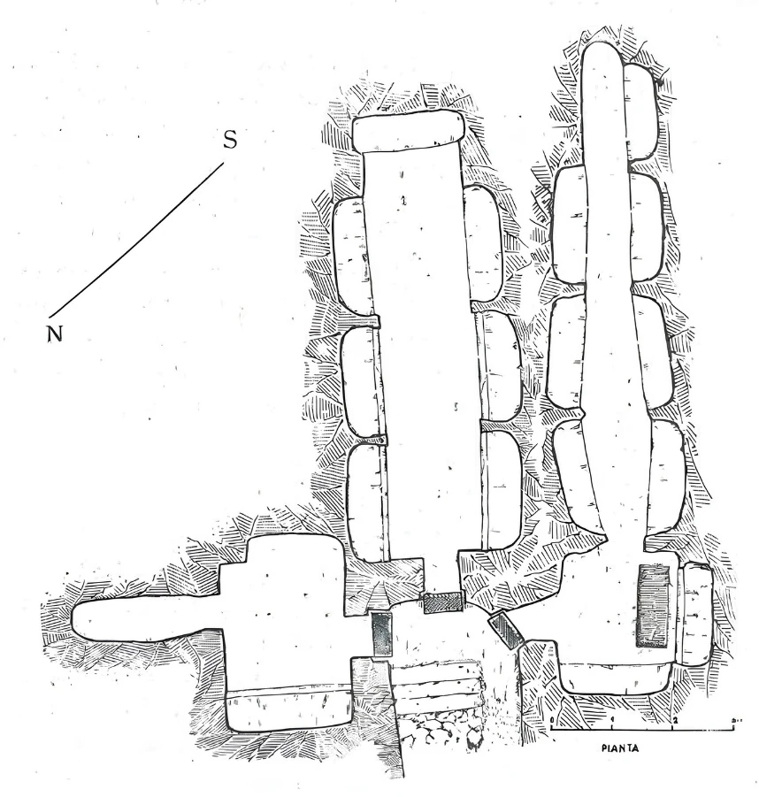
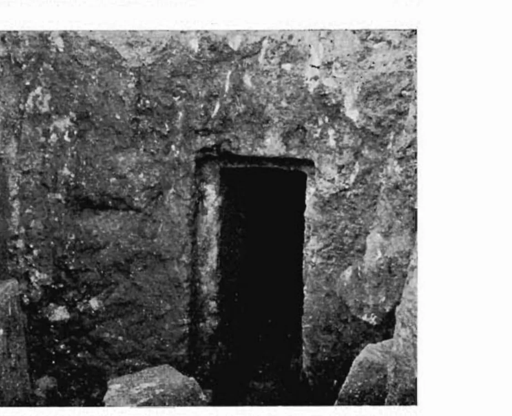
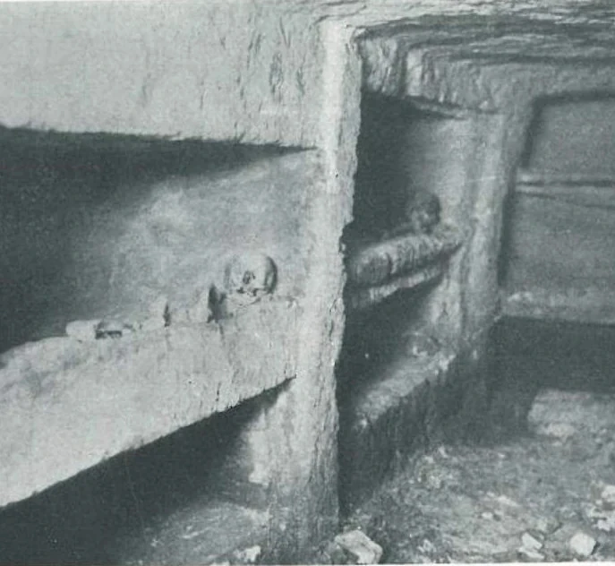
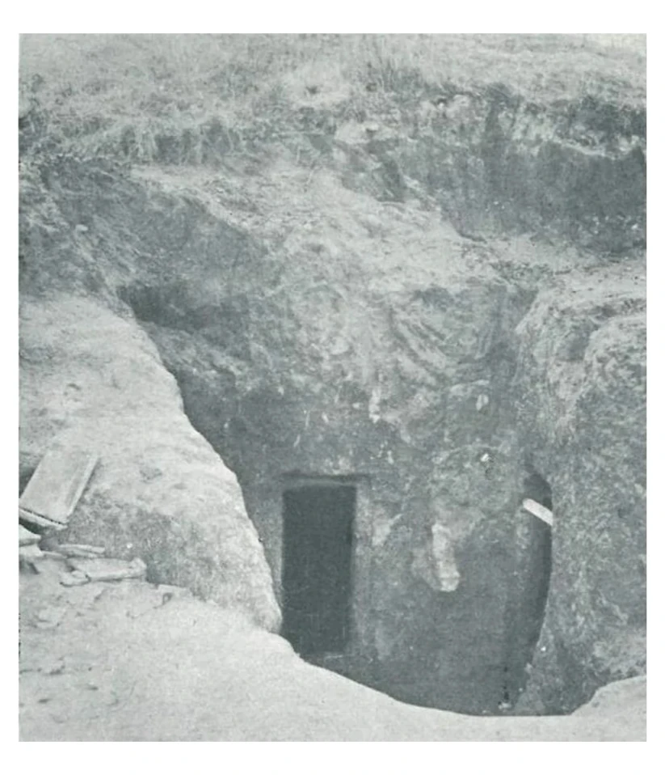
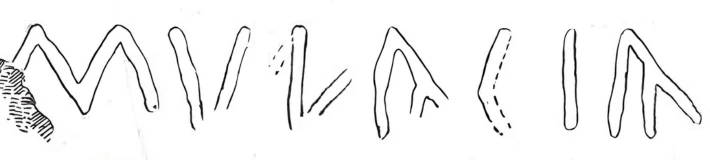
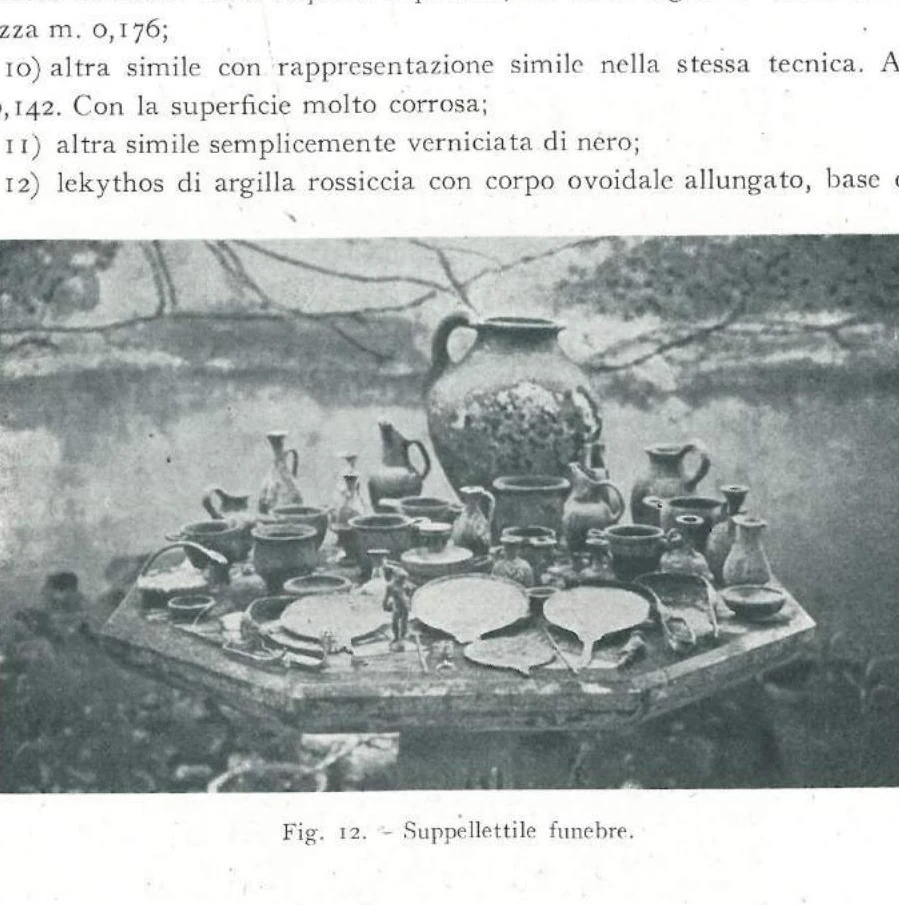
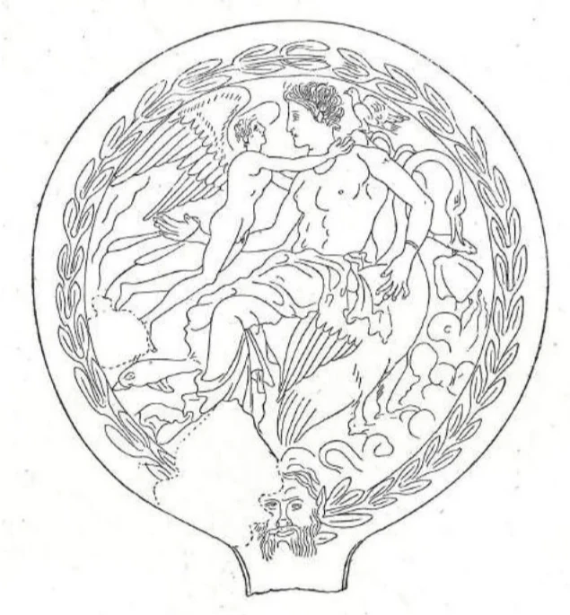

Mulakia: la tomba di famiglia e la ragazza nascosta sotto il pavimento
Un ipogeo unico nel Lazio: la famiglia campana dei Mulacia, i quarantatré posti di sepoltura, e una giovane donna rimasta intatta per duemila anni sotto il pavimento.
Fuori porta, lungo la strada dei morti
La via Ardeatina, il breve tratto che collega Santa Teresa al cimitero di Anzio, è uno dei luoghi più stratificati di tutto il territorio. Da un lato il fianco nord del vallo volsco; dall'altro, nel declivio erboso che scende al cimitero, si apre una delle tombe più strane del Lazio repubblicano. I Romani seppellivano i morti lungo le strade, appena fuori porta: qui c'era la necropoli meridionale di Antium, ai piedi della Porta Aurea.
La scoperta del 1938
Il 27 dicembre 1938, una squadra di operai intenta a cavare blocchi di arenaria aprì accidentalmente il vestibolo di una tomba sotterranea sul declivio erboso lungo la via Nettunense. Prima che le autorità potessero intervenire, le numerose sepolture a inumazione, rimaste intatte per secoli, vennero sistematicamente saccheggiate.
L'Ispettore Onorario della Soprintendenza, dott. Vincenzo G. Cicconetti, riuscì a recuperare parte dei materiali. Subito dopo fu incaricata l'archeologa Lucia Morpurgo, che nei primi giorni del 1939 documentò graficamente e fotograficamente lo stato dell'ipogeo: documentazione rimasta inedita, oggi nell'archivio della Soprintendenza.

Tre stanze, loculi su più piani
La Tomba Mulakia si apre nel fianco di un leggero declivio attraverso un'apertura in pietra ancora visibile dalla Nettunense. All'interno si articola in tre ambienti distinti:
- Camera centrale: galleria lunga con loculi scavati nelle pareti su tre livelli; sul lato sinistro è inciso il titolo funerario «Mulakia».
- Camera di destra: simile alla centrale, con analoghe file di loculi.
- Camera di sinistra: due letti funebri (lecti) ai lati e, sulla parete di fondo, l'inizio di una galleria mai completata.
Le due gallerie principali misurano 6,65 e 8,30 m di lunghezza, soffitto a 1,75 m. L'ipogeo era predisposto per 43 posti di deposizione.
La prima notizia a stampa: Lugli, 1940
La relazione di Morpurgo rimase inedita, ma la scoperta non rimase segreta: fu Giuseppe Lugli, nel suo saggio topografico del 1940, a darne la prima notizia a stampa, con due fotografie. I suoi conteggi fissano lo stato dell'ipogeo subito dopo il saccheggio: nel vano centrale sei loculi per parte su due file, tre nel fondo e altri due a livello del pavimento; nel vano di destra, «a forma di galleria catacombale», ventitré loculi; in quello di sinistra pochi, perché lo scavo «fu sospeso poco dopo l'inizio». Le tre porte si aprivano in fondo a un dromos scoperto, «come nelle tombe etrusche». I cadaveri, oltre cinquanta, erano sepolti integri, senza casse, «solo avvolti in bende», con accanto il corredo: vasellame etrusco-campano (skyphoi, lekythoi, pyxides), strigili, fusarole, collane e specchi, «di cui uno elegantemente inciso con la figura di Leda»: lo stesso specchio col cigno che oggi si ammira al Museo. Lugli datò l'uso della tomba tra la fine del IV e l'inizio del III secolo a.C., dopo la conquista romana, e lasciò aperta la domanda che ancora accompagna il sito: i sepolti erano Volsci o Romani?




Il nome: Mulakia o Munacia?
Il nome «Mulakia» (o «Mulacia») è un gentilizio femminile di origine campana. La terminazione suggerisce una famiglia di immigrati dall'area campano-sannitica, stabilitasi ad Anzio in epoca pre-romana o nei primi secoli della colonizzazione (post 338 a.C.).
La riscoperta del 2007: la Tomba della Civetta
Nel 2007, l'Associazione culturale «Olim» e la Cooperativa Matrix 96, in accordo con la Soprintendenza e l'Istituto di Topografia Antica della Sapienza, avviarono un progetto di recupero finanziato dalla Regione Lazio, coordinato da Andrea Di Renzoni e Andrea Schiappelli.
La pulizia dei tre ambienti portò a una scoperta che nessuno si aspettava: nel pavimento della camera di sinistra era nascosta una sepoltura intatta per oltre duemila anni. Apparteneva a una giovane donna della famiglia Mulacia, morta quasi certamente durante il parto: tra i resti ossei sono state identificate tracce di un individuo deceduto in età prenatale.

Uno specchio e una civetta
Il corredo della sepoltura comprende due pezzi eccezionali:
- Uno specchio di bronzo inciso della metà del IV sec. a.C., con la scena dei Dioscuri (Castore e Polluce): un manufatto di alta qualità artigianale che documenta i legami della famiglia con il mondo greco-italico.
- Una pelìke (piccola anfora a due anse) con figure sovradipinte in rosso su vernice nera, decorata con una civetta tra rami di ulivo: da qui il nome «Tomba della Civetta».
Il 17 agosto 2007 si tenne una conferenza pubblica al Museo Civico Archeologico, e il sito fu aperto alla visita serale. I reperti sono oggi esposti al Museo.
Pensa a quella ragazza: sepolta dai suoi con uno specchio dei Dioscuri e un vasetto dipinto con una civetta, dimenticata sotto il pavimento mentre sopra di lei la tomba di famiglia veniva saccheggiata, e ritrovata intatta venti secoli dopo. La Tomba della Civetta non è solo archeologia: è una storia di famiglia che il tempo non è riuscito a cancellare.

Si può visitare?
Oggi no. La tomba si trova lungo la via Nettunense, nel declivio erboso sul lato sinistro provenendo da Anzio, poco prima del cimitero civile, e l'apertura in pietra si riconosce ancora dalla strada. Ma l'ipogeo è chiuso e interdetto al pubblico, e non si sa se e quando verrà riaperto. Quello che si può vedere davvero sono i corredi: lo specchio di Leda e la pelike della Civetta sono esposti al Museo Civico Archeologico di Anzio (Villa Adele, Riviera Mallozzi).
Dove
Via Nettunense, Anzio: declivio erboso a sinistra provenendo da Anzio, poco prima del cimitero civile. Nelle mappe la tomba figura sotto il nome «Tomba Mulakia» o «Ipogeo Mulakia».